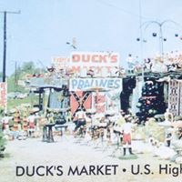

Duck's Market first started on the back of a flatbed truck selling produce in Scotts Hill, TN in 1949 by Carmen Duck with his two young sons, Joe and Jim. Carmen had traded a truck load of produce for a load of rugs. A few years later, they "upgraded" to a dirt floor building south of Henderson on old Hwy 45. In this location, they started selling rugs. As time went by, he added a variety of items including Tennessee souvenirs, fireworks, tapestries, clay pottery, ornamental concrete statuary, and a variety of other oddities - even small turtles.
The business grew and they moved to a different location approximately a mile north on the same road. This building was an upgrade from the previous one- it had a concrete floor. In the late 60's, Carmen moved the business one more time and that is the current location at 3455 U.S. Hwy 45 North. After his death, his daughter and her husband took over the business. When they decided they were selling out, Carmen's nephew, Alton Duck, Jr. purchased the business and it is now run by his son, Brian. Over the years, the variety of merchandise has changed. No longer is produce sold but fireworks, rugs, and ornamental concrete statuary are still staples in this ongoing family business.